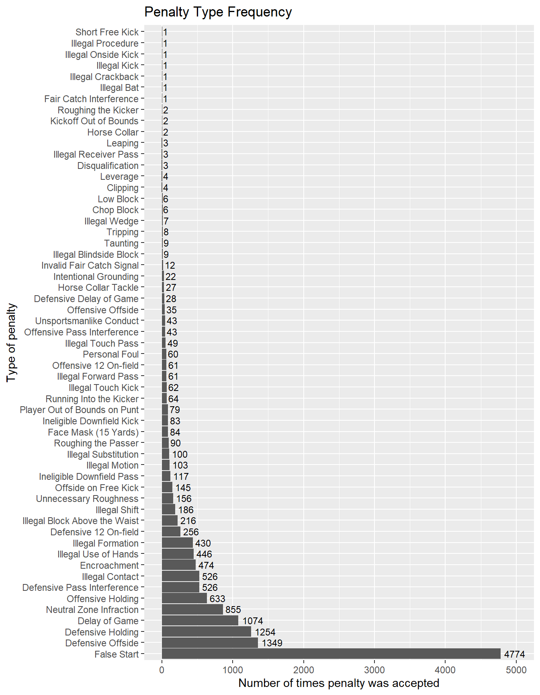
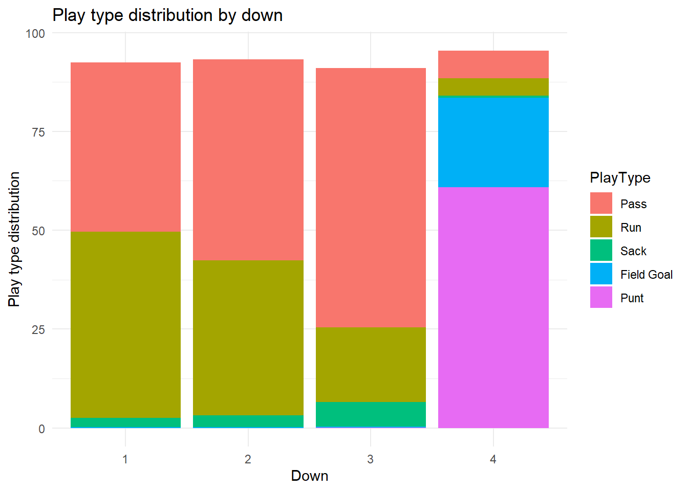
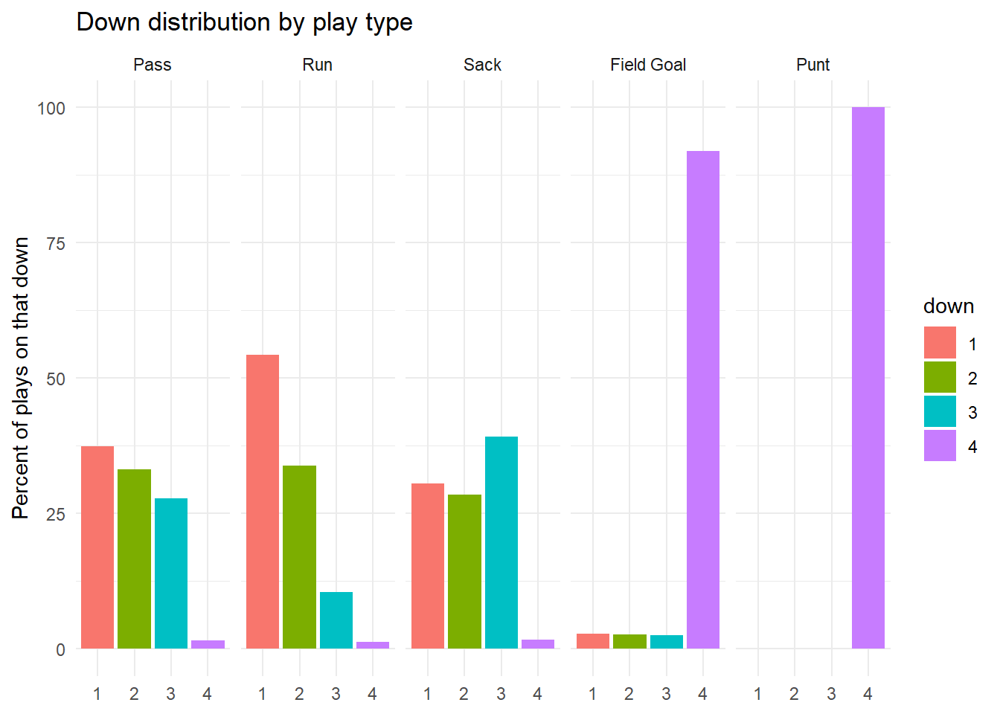
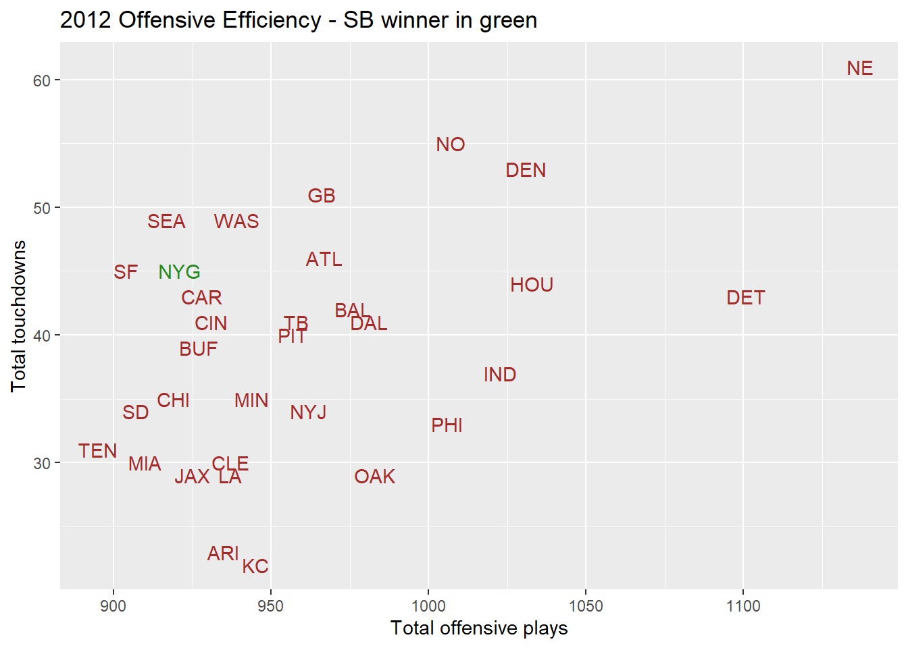
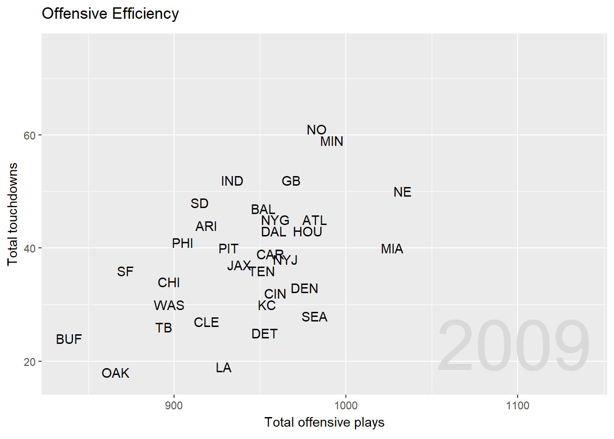
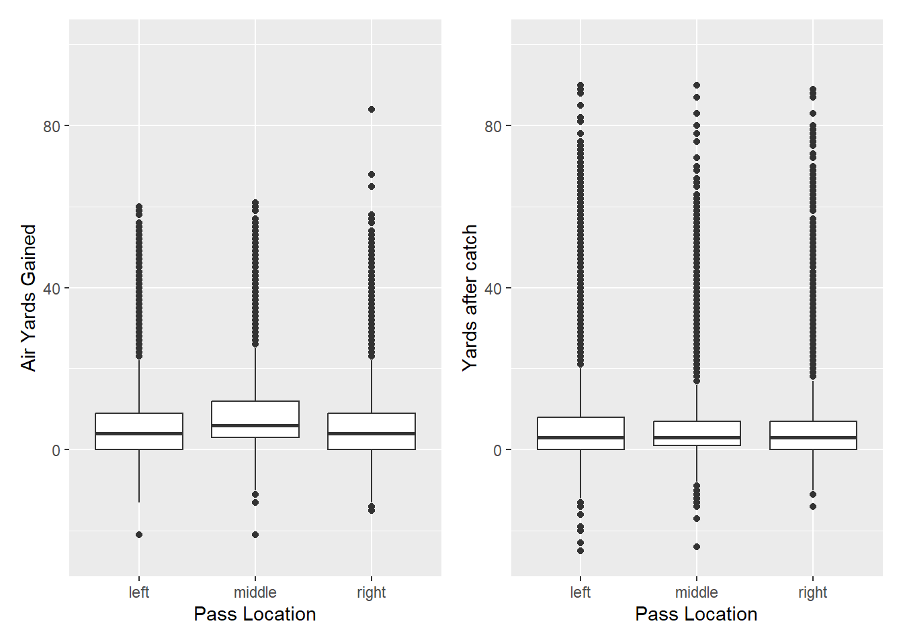
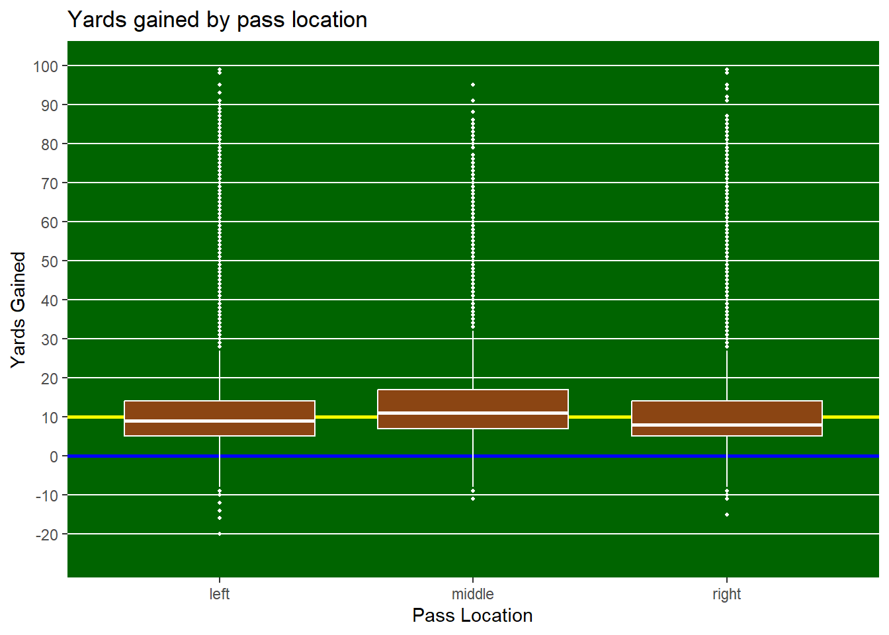

library(tidyverse)
library(RKaggle)
library(patchwork)EDA
Intro
For this project, I have chosen to analyze NFL plays data from 2009-2016, pulled from https://www.kaggle.com/datasets/schmadam97/nba-playbyplay-data-20182019 . I will start by reading in some packages I’ll need to do my preliminary data exploration.
df <- RKaggle::get_dataset("maxhorowitz/nflplaybyplay2009to2016")
plays <- df[[1]]
remove(df)One-way contingency table
Let’s take a look at the frequency of different accepted penalty types: Here I’m creating a contingency table that will filter the data to only include plays where a penalty call was accepted, and will group the result by the penalty type.
penalties <- plays |>
## Many PenaltyType cells have unnecessary commas and additional info,
## this line shortens those cells' text
mutate(PenaltyType = str_extract(PenaltyType, "^[^,]+"))|>
## Penalties only
filter(Accepted.Penalty == 1)|>
group_by(PenaltyType)|>
summarize(count = n())|>
arrange(desc(count)) |>
drop_na() |>
mutate(PenaltyType = factor(PenaltyType, levels = unique(PenaltyType)))
penalties |>
knitr::kable()| PenaltyType | count |
|---|---|
| False Start | 4774 |
| Defensive Offside | 1349 |
| Defensive Holding | 1254 |
| Delay of Game | 1074 |
| Neutral Zone Infraction | 855 |
| Offensive Holding | 633 |
| Defensive Pass Interference | 526 |
| Illegal Contact | 526 |
| Encroachment | 474 |
| Illegal Use of Hands | 446 |
| Illegal Formation | 430 |
| Defensive 12 On-field | 256 |
| Illegal Block Above the Waist | 216 |
| Illegal Shift | 186 |
| Unnecessary Roughness | 156 |
| Offside on Free Kick | 145 |
| Ineligible Downfield Pass | 117 |
| Illegal Motion | 103 |
| Illegal Substitution | 100 |
| Roughing the Passer | 90 |
| Face Mask (15 Yards) | 84 |
| Ineligible Downfield Kick | 83 |
| Player Out of Bounds on Punt | 79 |
| Running Into the Kicker | 64 |
| Illegal Touch Kick | 62 |
| Illegal Forward Pass | 61 |
| Offensive 12 On-field | 61 |
| Personal Foul | 60 |
| Illegal Touch Pass | 49 |
| Offensive Pass Interference | 43 |
| Unsportsmanlike Conduct | 43 |
| Offensive Offside | 35 |
| Defensive Delay of Game | 28 |
| Horse Collar Tackle | 27 |
| Intentional Grounding | 22 |
| Invalid Fair Catch Signal | 12 |
| Illegal Blindside Block | 9 |
| Taunting | 9 |
| Tripping | 8 |
| Illegal Wedge | 7 |
| Chop Block | 6 |
| Low Block | 6 |
| Clipping | 4 |
| Leverage | 4 |
| Disqualification | 3 |
| Illegal Receiver Pass | 3 |
| Leaping | 3 |
| Horse Collar | 2 |
| Kickoff Out of Bounds | 2 |
| Roughing the Kicker | 2 |
| Fair Catch Interference | 1 |
| Illegal Bat | 1 |
| Illegal Crackback | 1 |
| Illegal Kick | 1 |
| Illegal Onside Kick | 1 |
| Illegal Procedure | 1 |
| Short Free Kick | 1 |
From this table, clearly false starts are much more common than other penalty types, but looking at the top of the table, it seems like the Defense is the most common committer of penalties!
Bar plot
Let’s take a quick look at a plot of this information:
ggplot(data = penalties, aes(x = count, y = PenaltyType))+
geom_bar(stat = "identity", color = "#595959", linewidth = .1)+
geom_text(aes(label = count), hjust = -.2, size = 3)+
xlim(0, 5000)+
labs(x = "Number of times penalty was accepted",
y = "Type of penalty",
title = "Penalty Type Frequency")
Two-way contingency table
playTypes <- plays |>
# Drop NA values in down
filter(!is.na(down))|>
# Get counts for each play type in each down
count(PlayType, down) |>
# Get count values for each play type regardless of down
group_by(PlayType)|>
mutate(total = sum(n))cat("The table below shows us the proportion of each kind of play per down:\n")
playTypes |>
# Get proportions for each play type per down
group_by(down) |>
mutate(prop = round(n / sum(n) * 100, 2))|>
ungroup()|>
# Drop n from the output
select(-n)|>
# Format the final table
pivot_wider(names_from = down,
values_from = prop,
values_fill = 0)|>
arrange(desc(total)) |>
select(-total) |>
knitr::kable()The table below shows us the proportion of each kind of play per down:| PlayType | 1 | 2 | 3 | 4 |
|---|---|---|---|---|
| Pass | 42.84 | 50.76 | 65.62 | 6.98 |
| Run | 47.06 | 39.26 | 18.86 | 4.44 |
| Punt | 0.00 | 0.00 | 0.01 | 60.91 |
| No Play | 5.71 | 5.87 | 8.19 | 4.46 |
| Sack | 2.33 | 2.91 | 6.19 | 0.51 |
| Field Goal | 0.18 | 0.23 | 0.33 | 22.63 |
| QB Kneel | 1.49 | 0.89 | 0.74 | 0.07 |
| Spike | 0.38 | 0.08 | 0.05 | 0.00 |
| Timeout | 0.00 | 0.00 | 0.01 | 0.00 |
| Kickoff | 0.00 | 0.00 | 0.00 | 0.00 |
| Half End | 0.00 | 0.00 | 0.00 | 0.00 |
Here it’s clear that passing and running plays dominate downs 1-3, and fourth down is mostly punts and field goals.
Stacked bar chart
Let’s visualize this table - I am only going to select our 5 most common play types: Pass, run, punt, sack, & field goal. (No Play excluded)
Here, it makes sense that the columns don’t sum to 100, because I’ve dropped many play types
playTypes |>
group_by(down) |>
mutate(prop = round(n / sum(n) * 100, 2))|>
ungroup()|>
filter(PlayType %in% c("Pass", "Run", "Sack", "Punt", "Field Goal")) |>
mutate(down = as.factor(down),
PlayType = factor(PlayType,
levels = c("Pass", "Run", "Sack", "Field Goal", "Punt"))
)|>
ggplot(aes(x = down, y = prop, fill = PlayType)) +
geom_col(position = "stack") +
labs(x = "Down", y = "Play type distribution", title = "Play type distribution by down") +
theme_minimal()
Side-by-side bar chart
Let’s visualize this in a slightly different way by swapping our categories - Let’s look at each play type’s distribution over downs:
Of note, each down has less instances than the previous, so a decreasing trend overall is to be expected. Each play type section should sum to 100.
playTypes |>
## Select only "Common Plays"
filter(PlayType %in% c("Pass", "Run", "Sack", "Punt", "Field Goal")) |>
mutate(down = as.factor(down),
PlayType = factor(PlayType,
levels = c("Pass", "Run", "Sack", "Field Goal", "Punt")))|>
group_by(PlayType) |>
mutate(prop = round(n / sum(n) * 100, 2))|>
ungroup()|>
ggplot(aes(x = down, y = prop, fill = down)) +
geom_col() +
facet_wrap(~ PlayType, nrow = 1) +
# coord_flip() +
# scale_y_continuous(labels = scales::percent) +
labs(x = NULL, y = "Percent of plays on that down", title = "Down distribution by play type") +
theme_minimal()
Here I’ll take a look at each team’s yearly stats - running and passing plays, and touchdowns scored.
teamstats <- plays |>
mutate(PenaltyType = str_extract(PenaltyType, "^[^,]+"))|>
## JAX and JAC are both Jacksonville (Bortles!)
## Rams moved to LA
mutate(posteam = if_else(posteam == "STL", "LA", posteam),
posteam = if_else(posteam == "JAC", "JAX", posteam))|>
## Dropping interceptions because defensive TDs aren't my focus here
filter(InterceptionThrown == 0) |>
group_by(Season, GameID, posteam, DefensiveTeam)|>
summarize(tds = sum(Touchdown),
passes = sum(PlayType == "Pass"),
runs = sum(PlayType == "Run"))|>
drop_na()Scatter plot
Let’s take a closer look at the 2012 season
teamstats |>
group_by(Season, posteam)|>
summarize(total_tds = sum(tds),
total_offensive_plays = sum(passes) + sum(runs))|>
filter(Season == 2012)|>
ggplot(aes(x = total_offensive_plays,
y = total_tds,
label = posteam,
color = posteam == "NYG"))+
scale_color_manual(values = c("FALSE" = "brown", "TRUE" = "forestgreen"),
guide = "none")+
geom_text()+
labs(x = "Total offensive plays",
y = "Total touchdowns",
title = "2012 Offensive Efficiency - SB winner in green")
Animated scatter plot
Trying out an animated plot! This is my not-covered-in-class plot
library(gganimate)
library(gifski)
library(png)teamstats |>
group_by(Season, posteam)|>
summarize(total_tds = sum(tds),
total_offensive_plays = sum(passes) + sum(runs))|>
ungroup()|>
ggplot(aes(x = total_offensive_plays,
y = total_tds,
label = posteam))+
## Big year label
geom_text(aes(label = Season), x = Inf, y = -Inf,
hjust = 1.1, vjust = -0.5,
size = 20, color = "grey85", inherit.aes = FALSE)+
## Normal team labels
geom_text()+
labs(x = "Total offensive plays",
y = "Total touchdowns",
title = "Offensive Efficiency")+
## Animation piece - Go by season
transition_states(Season,
transition_length = 2,
state_length = 1) +
enter_fade() +
exit_shrink() +
## Style of movement choice
ease_aes('sine-in-out')
Numeric Summaries - Completed passes
columnsOfInterest <- c(3, 5, 16, 21, 23, 33, 36, 37, 39, 40)
passes <- plays|>
filter(PlayType == "Pass" & PassOutcome == "Complete")|>
select(all_of(columnsOfInterest))|>
drop_na()
passes|>
group_by(PassLocation)|>
summarize(airmean = mean(AirYards),
airsd = sd(AirYards),
airmed = median(AirYards),
groundmean = mean(YardsAfterCatch),
groundsd = sd(YardsAfterCatch),
groundmed = median(YardsAfterCatch))# A tibble: 3 × 7
PassLocation airmean airsd airmed groundmean groundsd groundmed
<chr> <dbl> <dbl> <dbl> <dbl> <dbl> <dbl>
1 left 5.81 8.43 4 5.39 7.42 3
2 middle 8.23 7.89 6 4.90 6.99 3
3 right 5.69 8.47 4 5.20 7.23 3Above, we see that passes up the middle go further forward in the air, while passes on the outside tend to be carried further after the catch - Let’s make a boxplot to see this:
Boxplots
air <- passes|>
group_by(PassLocation)|>
ggplot(aes(x = PassLocation, y = AirYards))+
ylim(-25,100)+
geom_boxplot()+
labs(x = "Pass Location", y = "Air Yards Gained")
ground <- passes|>
group_by(PassLocation)|>
ggplot(aes(x = PassLocation, y = YardsAfterCatch))+
ylim(-25,100)+
geom_boxplot()+
labs(x = "Pass Location", y = "Yards after catch")
cat("Passing yards gained before and after catch, by pass location")Passing yards gained before and after catch, by pass locationair | ground
Above, I manually set the y limits to match, so a few (10) outliers didn’t fit, hence the warnings.
Fun plot
One more, for fun, with “Yards.Gained”!
passes|>
ggplot(aes(x = PassLocation, y = Yards.Gained))+
geom_hline(yintercept = 10, color = "yellow", linewidth = 1)+
geom_hline(yintercept = 0, color = "blue", linewidth = 1)+
geom_boxplot(outlier.color = "white", outlier.size = .75, fill = "chocolate4", color = "white")+
scale_y_continuous(limits = c(-25, 100),
breaks = seq(-20, 100, by = 10)) +
theme(
panel.background = element_rect(fill = "darkgreen"),
panel.grid.major.y = element_line(color = "white"),
panel.grid.major.x = element_blank(),
panel.grid.minor = element_blank()
)+
labs(x = "Pass Location", y = "Yards Gained", title = "Yards gained by pass location")